Head of UX Design & Research
At Qualtrics I led the global UX Design & Research organization, responsible for great user and buyer experiences across all Qualtrics products. I built the team and its disciplines from the ground up to 20+ people across UX design, visual design, user research, and information architecture, for web and mobile.
I was in the boardroom when Qualtrics decided to go after Experience Management (XM) as its category, as one of about a dozen key executives who voted on whether to move forward. I designed the XM brand concept from scratch, and personally designed the UX of the merged products in the new XM platform, unifying 7 separate products into one. That platform helped make Qualtrics an attractive acquisition target and prepare to go public, before SAP acquired it for $8B in 2018.
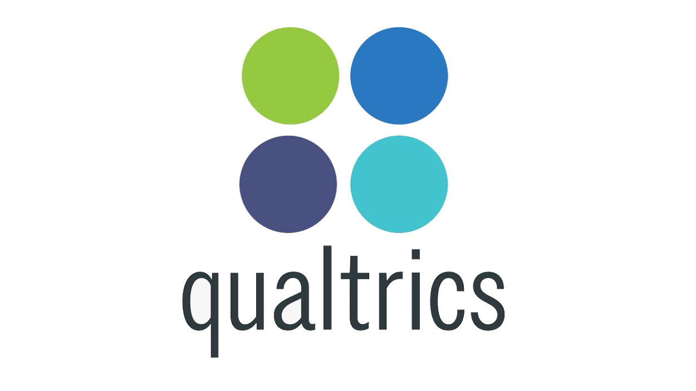
The XM brand concept I designed from scratch: four dots for the four pillars of Experience Management (employee, product, brand, and customer experience).
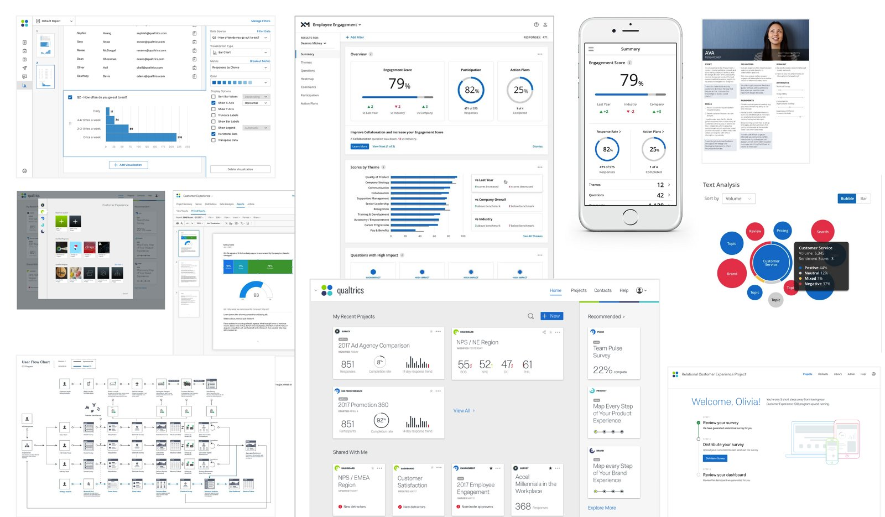
When I joined Qualtrics, it had a range of very different web applications, each with its own user experience and technology stack. One of my main missions was to bring them together into one platform.
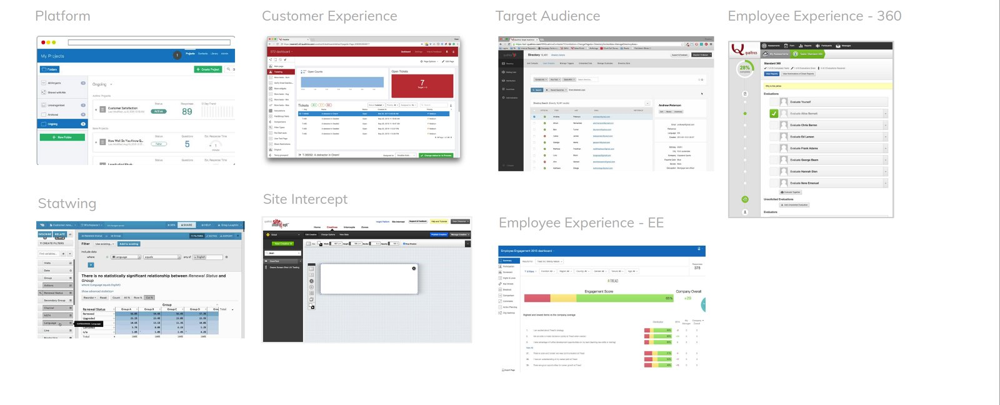
Before: separate applications, each with its own experience.
I personally designed the UX of the merged products in the Experience Management (XM) Platform, and my team and I brought the applications together with a common design system covering interaction, workflow, and visual design.
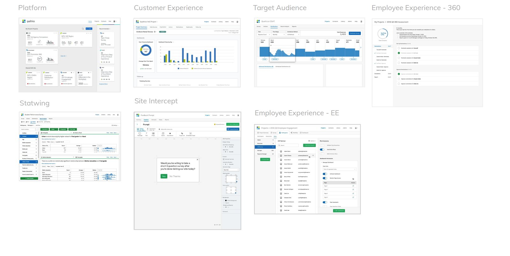
After: one XM Platform with a shared design system.
Bringing all the products under one platform meant a new home page and navigation, so people could get to every product included in their subscription.
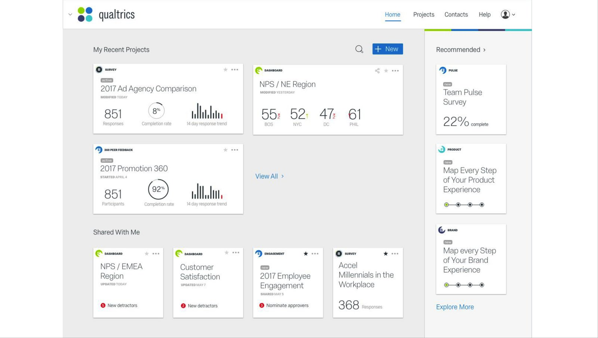
Dashboards are central to every Qualtrics product, and the survey builder is where the company started. This overview shows a dashboard (left), the new Report Builder that makes it much easier to turn data into compelling reports (top right), and the redesigned survey builder (bottom right).
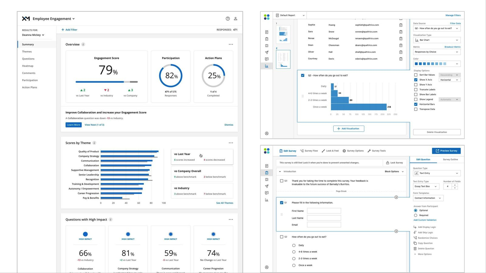
The transformation from the old Report Builder interface and workflows to the new one:
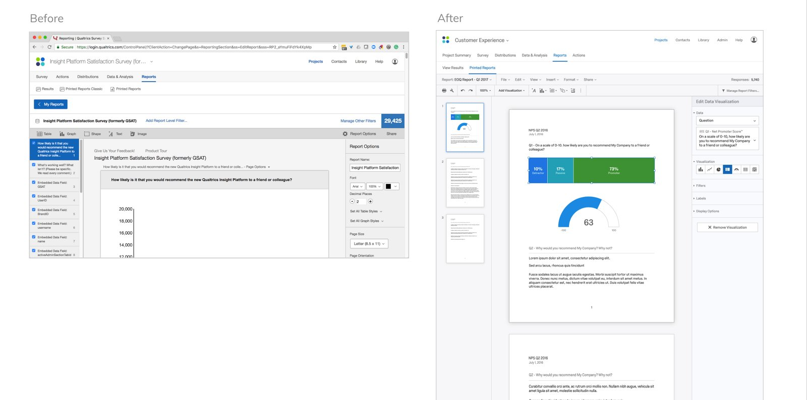
Mobile mattered on both sides of the product: taking surveys, and reporting on the results (shown here).
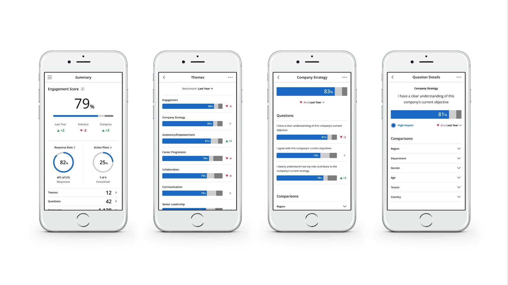
Qualtrics products had 16 different condition editors:
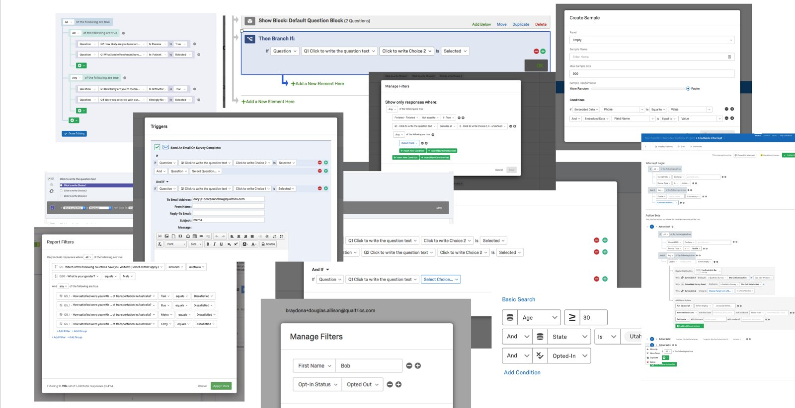
We consolidated them into a single condition editor used everywhere:
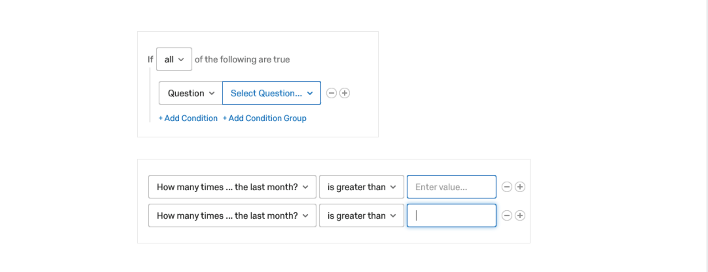
Research uncovered many complex workflows across Qualtrics and third-party products, which we then improved through product design. We used mini-wires to communicate them. This example shows the customer experience (CX) workflows, including the operational and strategic flows we focused on adding and differentiating with.
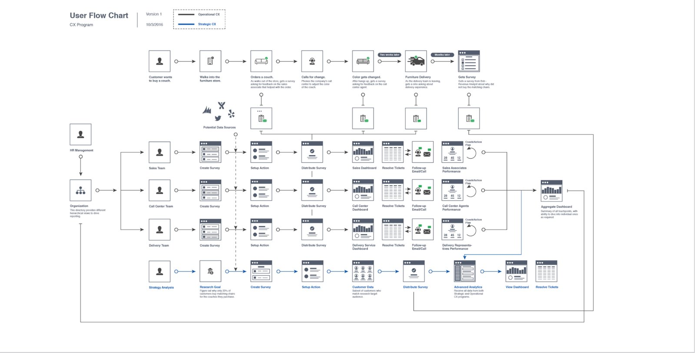
The XM Platform had many third-party extensions to integrate and automate customer experience data sources and outputs. This design separates standard, included functionality from optional add-ons. The key was to make upsell something users saw value in, and could dismiss if they weren't interested.
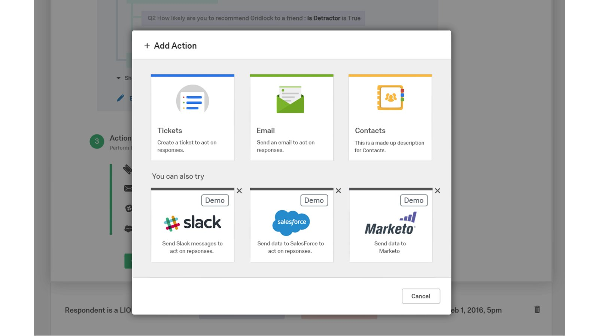
Creating competitive advantage through patents was a key focus. One example: I came up with this new data visualization for our AI-powered sentiment analysis tool. It shows several dimensions at once: overall topic and sentiment (the color of the core circle), prevalence (the size of the circle), and how responses within that topic are distributed by sentiment. We patented it (US 20220138265).
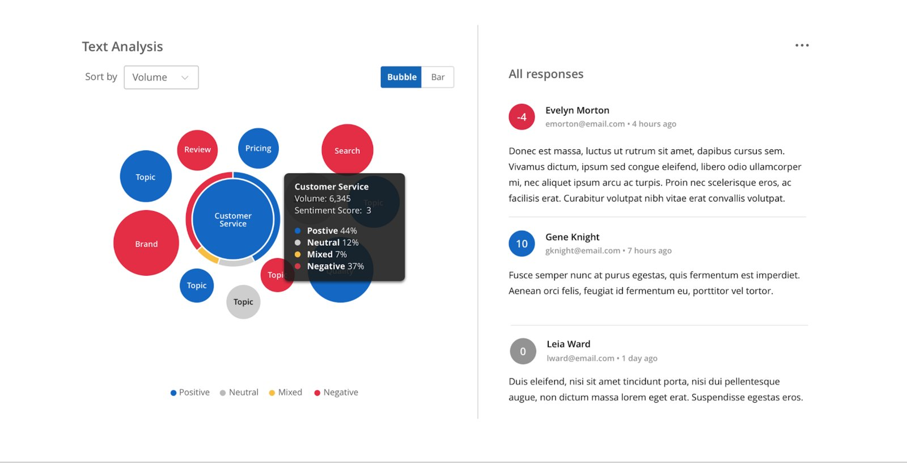
My team and I established the first continuous usability benchmarking program at Qualtrics: an in-product SUS survey across all products, sent to cohorts of users at a set frequency. We reported the results continuously on dashboards in our office, open to all of Qualtrics, so we could compare Qualtrics products with each other on usability and usefulness, and with the wider tech industry. Once set up, it ran automatically with minimal maintenance.
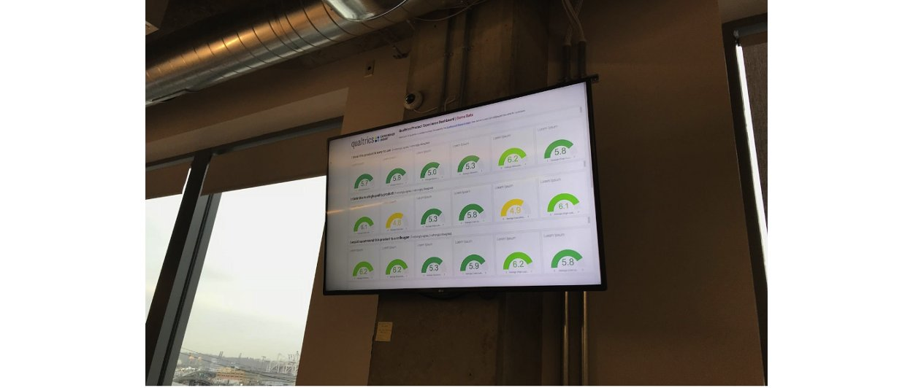
Building a UX team also means building its identity. This piece represents the many facets and crafts of UX. Beyond presentations, guidelines, and swag, we used it to recognize others: our UX ambassador program gave people outside the UX team who made significant contributions to the user experience swag with this brand on it to proudly wear (and they did).
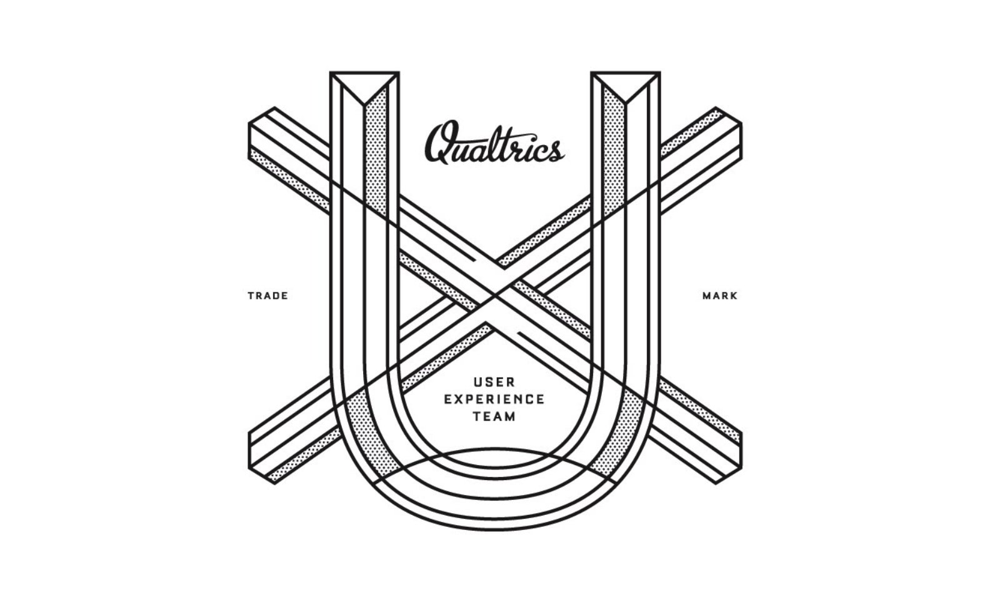
"Daan established Qualtrics' User Experience team, from creating its UX hiring practices, to hiring the team, to developing a design language, to building pattern libraries and style guides. Beyond building teams he is dedicated to building great products."
"His design leadership contributed significantly to Survey Platform growth in customer satisfaction, renewal rate and usage! Daan was able to get everyone along—Product, Engineering, UX, Marketing—on making tough product design decisions."